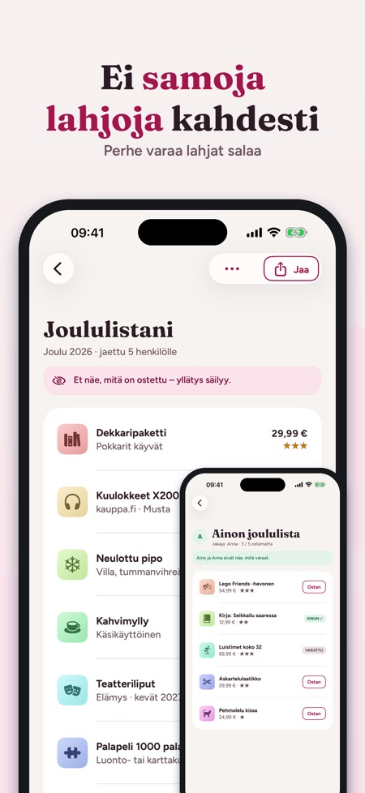
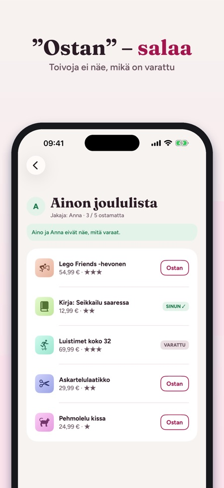
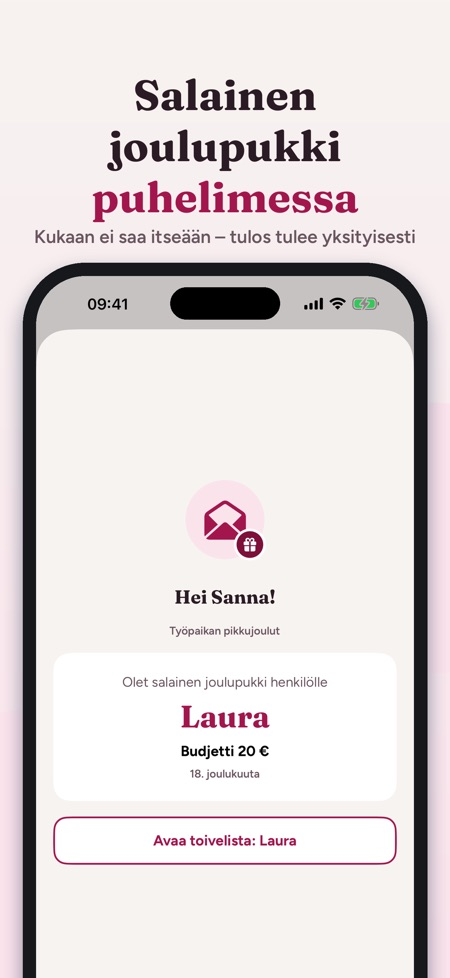

Salainen joulupukki ja lahjat.



Toivelista, jonka koko perhe näkee – ei enää samoja lahjoja kahdesti.
Tee lista jokaiseen juhlaan, jaa se linkillä ja anna perheen varata lahjat salaa. Mummo näkee, mitä on jäljellä, serkku näkee, mikä on jo varattu, ja toivoja ei koskaan näe, mitä on ostettu.
LISÄÄ TOIVEET NOPEASTI
• Liitä linkki mistä tahansa kaupasta – otsikko ja kuva haetaan kerran
• Jaa suoraan Safarista tai kaupan sovelluksesta: ”Lisää toivelistaan”
• Oma kuva tai pelkkä teksti
• Hinta, väri/koko, määrä, kuinka paljon toivot (1–3 tähteä), ”useampi käy” ja viesti perheelle
JAA PERHEELLE
• Kutsu Viesteillä, WhatsAppilla tai sähköpostilla – iCloud-jako, tiliä ei tarvita
• Sovelluksen käyttäjät näkevät listan reaaliajassa ja napauttavat ”Ostan”
• Toivoja ei näe varauksia: yllätys säilyy
• Jos kaksi varaa saman lahjan, se jää ensimmäiselle
• Ilman sovellusta: lähetä lista kuvana tai tekstinä
PERHE JA OSTETTAVAT
• Kaikki sinulle jaetut listat henkilöittäin ja seuraavan juhlan päivämäärällä
• Kaikki ostettavat yhdessä paikassa: varattu, ostettu, paketoitu, annettu
• Budjetti henkilöittäin
JUHLAT JA MUISTUTUKSET
• Joulu, syntymäpäivät, nimipäivät, häät, ylioppilasjuhlat, ristiäiset, rippijuhlat ja omat päivät
• Muistutus 14 päivää ennen – ja montako toivetta on vielä ostamatta
SALAINEN JOULUPUKKI
• Lisää osallistujat, parit jotka eivät saa toisiaan, budjetti ja päivä
• Arvonta tehdään puhelimessa, eikä kukaan saa itseään
• Jokainen saa tuloksensa yksityisenä linkkinä, joka aukeaa myös ilman sovellusta – järjestäjä ei näe arvontaa sovelluksessa
• Tai kierrätä puhelinta ja näytä tulokset yksi kerrallaan
LASTEN LISTAT
• Tee listoja lapsille – vain etunimi, ei tiliä lapselle
OSTO
3 omaa listaa ja kaikki antamiseen liittyvä (jakaminen, varaaminen, ostettavat, budjetti) toimivat ilman ostoa, samoin salaisen joulupukin arvonta enintään 5 hengelle. Kertaosto avaa täyden käytön: rajattomasti listoja, useammat lasten listat, arvonnan isommille porukoille, lahjaideat ja PDF-viennin. Osto koskee koko perhettä Perhejaon kautta. Ei tilausta, ei mainoksia.
YKSITYISYYS
Listat tallennetaan laitteillesi ja iCloudiisi. Sovellus lähettää nimetöntä käyttötilastoa Google Analytics for Firebasen kautta (esim. käytetyt näkymät ja painikkeet, sovelluksen sisäiset ostot ja likimääräinen maa); sen voi kytkeä pois asetuksista.